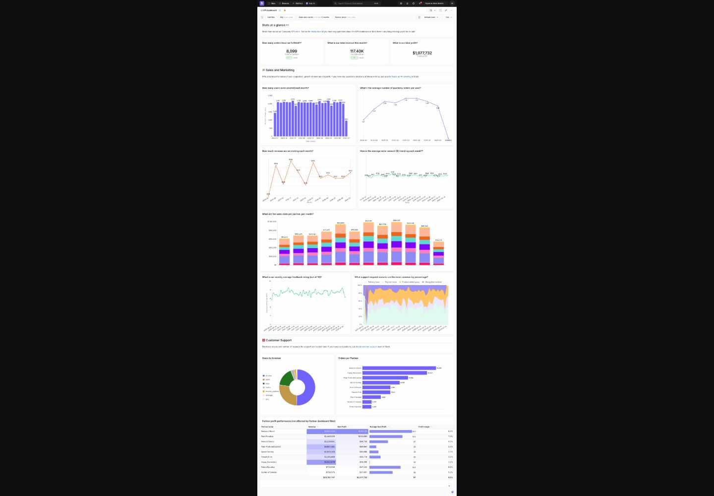
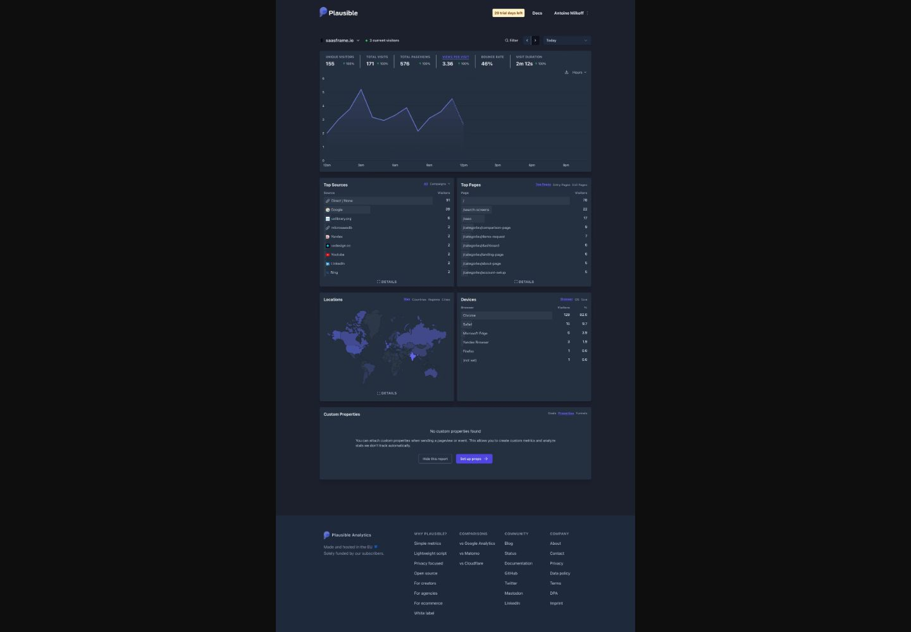
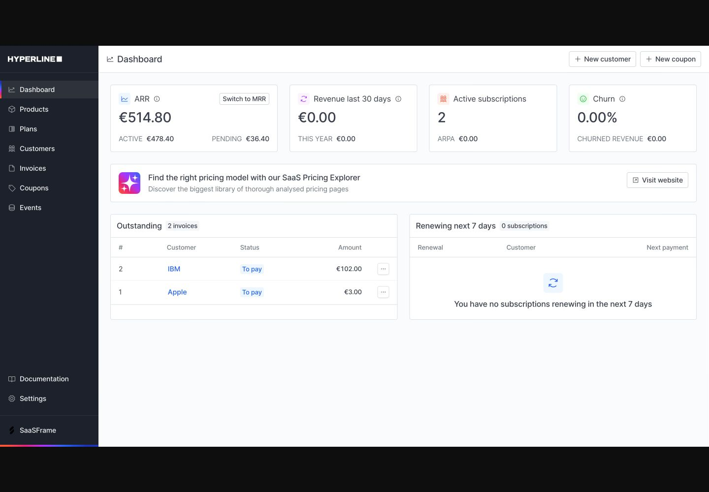
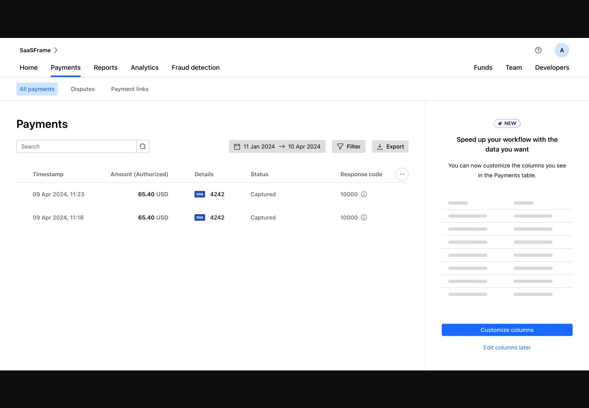
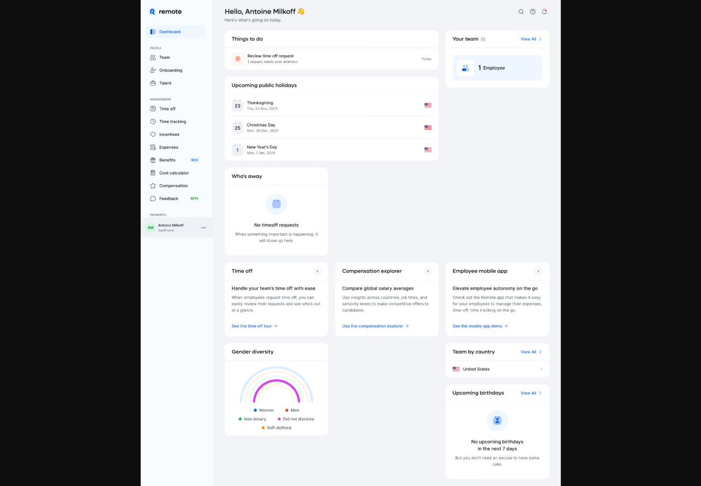
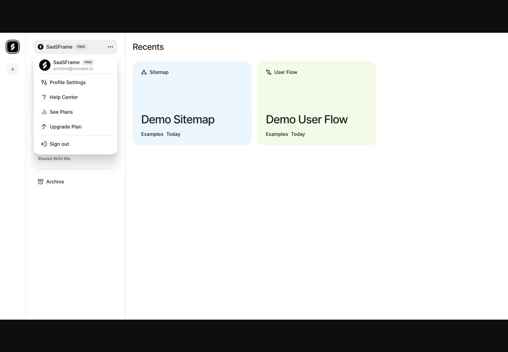
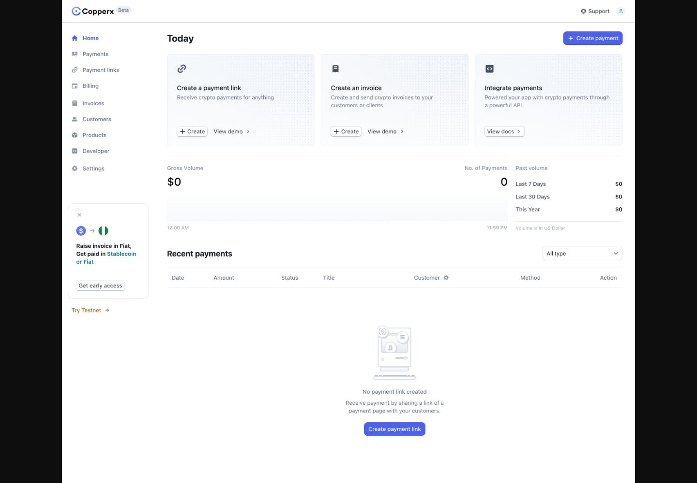
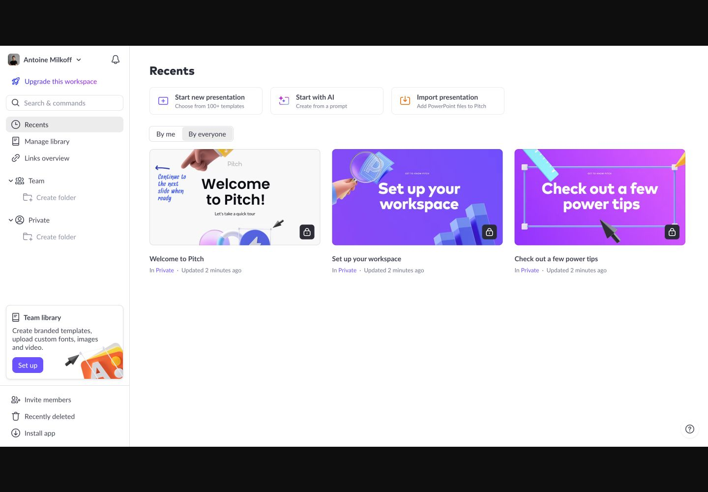
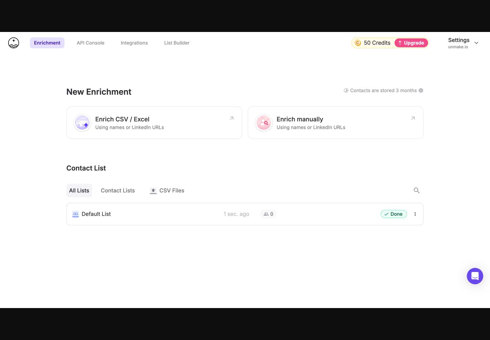

Dust Dashboard
SaaSFrame 公开收录页 ↗
- 布局
- 指令输入位于上方，代理卡片在下方，单一工作区
- 导航
- 左侧按Chat、Spaces、Admin分组
- 配色
- 白色与中性灰，强调色很少
- 字体层级
- 无衬线，大标题与辅助文字分级明确
- 间距
- 主输入区宽松，卡片内部紧凑
- 图表
- 首页没有强行填入经营图表
- 可见交互入口
- 可见搜索和代理选择入口；借鉴先找工作再展开上下文
视觉观察；未登录原产品、未验证实际动画。来源 Dust / SaaSFrame 收录，截取时间见访问记录。
DESIGN RESEARCH / 2026.11.05
收集 38 个具名案例链接，其中 20 个完成公开产品界面的视觉观察，18 个因访问限制仅保留索引。下方每项分析均对应可打开的原始收录页与本地证据。
优先检索 Modern SaaS Dashboard、Bento Grid、Minimal Admin、AI Workspace、Floating Navigation。Dribbble 浏览器返回空白 202，部分文字可被搜索索引读取；所选 Behance 页面返回 403；Figma Community 受 robots 限制。SaaSFrame 有 20 个独立页面公开预览可见，未访问付费 Figma 文件或产品完整流程。SaaS UI Design 的首页/分类可访问，但未把未查看的产品流程计入案例。Mobbin 公开首页可达，完整流程需登录，未计入视觉研究。
字体只描述视觉类别，不声称知道付费产品的精确字库、字号或 Token。可见按钮并不证明交互已被实测。原型中的微交互是本项目独立设计。
视觉观察；未登录原产品、未验证实际动画。来源 Dust / SaaSFrame 收录，截取时间见访问记录。

视觉观察；未登录原产品、未验证实际动画。来源 Wise / SaaSFrame 收录，截取时间见访问记录。

视觉观察；未登录原产品、未验证实际动画。来源 Stripe / SaaSFrame 收录，截取时间见访问记录。

视觉观察；未登录原产品、未验证实际动画。来源 Mixpanel / SaaSFrame 收录，截取时间见访问记录。

视觉观察；未登录原产品、未验证实际动画。来源 Lightdash / SaaSFrame 收录，截取时间见访问记录。

视觉观察；未登录原产品、未验证实际动画。来源 Plausible / SaaSFrame 收录，截取时间见访问记录。

视觉观察；未登录原产品、未验证实际动画。来源 Unkey / SaaSFrame 收录，截取时间见访问记录。

视觉观察；未登录原产品、未验证实际动画。来源 Hyperline / SaaSFrame 收录，截取时间见访问记录。

视觉观察；未登录原产品、未验证实际动画。来源 Cal.com / SaaSFrame 收录，截取时间见访问记录。

视觉观察；未登录原产品、未验证实际动画。来源 Routine / SaaSFrame 收录，截取时间见访问记录。

视觉观察；未登录原产品、未验证实际动画。来源 Checkout.com Payments / SaaSFrame 收录，截取时间见访问记录。

视觉观察；未登录原产品、未验证实际动画。来源 Remote / SaaSFrame 收录，截取时间见访问记录。

视觉观察；未登录原产品、未验证实际动画。来源 FlowMapp / SaaSFrame 收录，截取时间见访问记录。

视觉观察；未登录原产品、未验证实际动画。来源 Copperx / SaaSFrame 收录，截取时间见访问记录。

视觉观察；未登录原产品、未验证实际动画。来源 Hume AI / SaaSFrame 收录，截取时间见访问记录。

视觉观察；未登录原产品、未验证实际动画。来源 Reducto / SaaSFrame 收录，截取时间见访问记录。

视觉观察；未登录原产品、未验证实际动画。来源 Atlas / SaaSFrame 收录，截取时间见访问记录。

视觉观察；未登录原产品、未验证实际动画。来源 Pitch / SaaSFrame 收录，截取时间见访问记录。

视觉观察；未登录原产品、未验证实际动画。来源 FullEnrich Enrichment / SaaSFrame 收录，截取时间见访问记录。

视觉观察；未登录原产品、未验证实际动画。来源 Stripe Payment / SaaSFrame 收录，截取时间见访问记录。
这些标题与作者经搜索索引核对。访问未成功，不推断其实际布局、字体、图表或动效，也不计入上方 20 个视觉研究案例。
| 编号 | 原始作品链接 | 访问情况 | 采用范围 |
|---|---|---|---|
| R01 | Restaurant Management DashboardOussama Saadoune | 浏览器返回空白202；搜索索引可核对标题/作者 | 仅题材/作者索引，未作视觉依据 |
| R02 | Restaurant SaaS Dashboard | SpoonDesign Studio | 浏览器返回空白202；搜索索引可核对标题/作者 | 仅题材/作者索引，未作视觉依据 |
| R03 | Restaurant POS Dashboard Design using Bento GridJunaed Ahmed | 浏览器返回空白202；搜索索引可核对标题/作者 | 仅题材/作者索引，未作视觉依据 |
| R04 | Bento Grid DashboardTasfia Barshat | 浏览器返回空白202；搜索索引可核对标题/作者 | 仅题材/作者索引，未作视觉依据 |
| R05 | Bento grid & dashboard for revops startupRobin Holesinsky | 浏览器返回空白202；搜索索引可核对标题/作者 | 仅题材/作者索引，未作视觉依据 |
| R06 | Minimal SaaS Dashboard, Clean UI & Visual HierarchyBea Grey | 浏览器返回空白202；搜索索引可核对标题/作者 | 仅题材/作者索引，未作视觉依据 |
| R07 | SaaS Growth Dashboard UI – Bento Grid Analytics ExplorationNishi | 浏览器返回空白202；搜索索引可核对标题/作者 | 仅题材/作者索引，未作视觉依据 |
| R08 | AI Workforce Management Dashboard UI DesignNasrullah Emam | 浏览器返回空白202；搜索索引可核对标题/作者 | 仅题材/作者索引，未作视觉依据 |
| R09 | Bento Grid DesignIonut Zamfir | 浏览器返回空白202；搜索索引可核对标题/作者 | 仅题材/作者索引，未作视觉依据 |
| R10 | Bento Features Section ExplorationSeda Ulu | 浏览器返回空白202；搜索索引可核对标题/作者 | 仅题材/作者索引，未作视觉依据 |
| R11 | Minimal NavigationTran Mau Tri Tam | 浏览器返回空白202；搜索索引可核对标题/作者 | 仅题材/作者索引，未作视觉依据 |
| R12 | Floating App Navigation ConceptDeverust Studio | 浏览器返回空白202；搜索索引可核对标题/作者 | 仅题材/作者索引，未作视觉依据 |
| R13 | WhatTask: AI Virtual Office WorkspaceVlad Goncharov / Flatonica | 浏览器返回空白202；搜索索引可核对标题/作者 | 仅题材/作者索引，未作视觉依据 |
| R14 | Navigation bar explorationSankalp Sinha | 浏览器返回空白202；搜索索引可核对标题/作者 | 仅题材/作者索引，未作视觉依据 |
| R15 | RestroQ – Restaurant Management & Admin DashboardWincasoft | 访问受限 | 仅题材/作者索引，未作视觉依据 |
| R16 | Restaurant Management SaaS Platform | Analytics App POSRuslan Kosinov | 访问受限 | 仅题材/作者索引，未作视觉依据 |
| R17 | Dashboard for restaurantVitalii Kucherov | 访问受限 | 仅题材/作者索引，未作视觉依据 |
| R18 | Orriso – AI Workspace & UX UI Dashboard DesignMultiple Owners | 访问受限 | 仅题材/作者索引，未作视觉依据 |
外部截图仅存放于研究证据目录；本地原型没有复用他人完整界面、代码或外部截图。